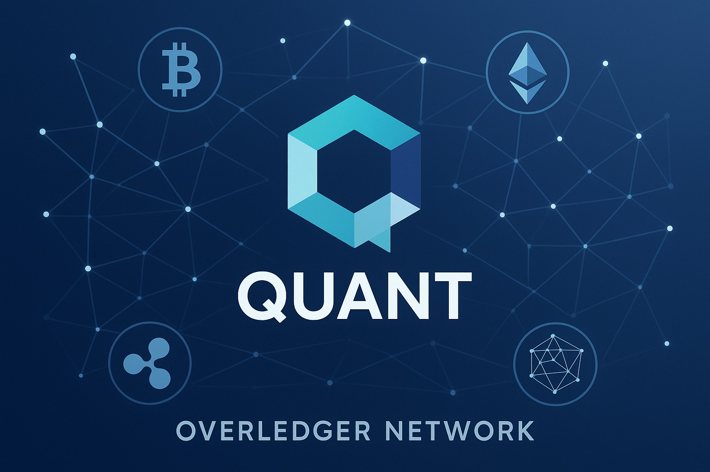

Quant Price Prediction for End of 2025: In-Depth Analysis and Insights
The information in this article is provided for educational purposes only and is not investment advice. Cryptocurrency investments carry risks.
Introduction
As of August 20, 2025, 01:20 AM EEST, Quant (QNT) is trading at approximately $80.12, solidifying its role as a key player in blockchain interoperability. Launched in 2018 by Gilbert Verdian, Quant’s Overledger Network enables seamless communication between different blockchains, facilitating enterprise adoption and cross-chain applications. With a market cap of around $1.21 billion, QNT ranks among the top cryptocurrencies. This article provides a comprehensive analysis of QNT’s price outlook for the end of 2025, exploring bullish and bearish scenarios, key growth drivers, and potential risks based on current market trends and ecosystem developments.
Current Situation
As of August 20, 2025, Quant’s price is around $80.12, reflecting a 3.2% increase over the past 7 days and a 10.5% gain over the past month. Over the last 30 days, QNT has recorded 16/30 (53%) green days with a volatility of 6.8%, indicating moderate price stability. The Fear and Greed Index at 65 suggests a greedy market sentiment, driven by Quant’s growing adoption in enterprise blockchain solutions and partnerships with institutions like the Bank of England and Oracle. Over the past year, QNT has risen from $65.00, achieving a 23.3% gain. Since its launch in 2018 at $0.22, QNT has grown significantly, though it remains 81.3% below its all-time high of $428.38 from September 2021. Recent partnerships and Overledger upgrades signal continued ecosystem growth.
Price Predictions for End of 2025
Analyst forecasts for Quant by December 2025 vary due to its niche role in interoperability. Bearish scenarios suggest a potential decline to $50.00–$65.00 if a projected 30–50% market correction occurs in early 2025 or if enterprise adoption slows. Moderate projections estimate QNT stabilizing between $90.00 and $120.00, supported by steady growth in cross-chain applications and institutional partnerships. Bullish forecasts predict QNT could reach $150.00–$200.00, particularly if a market rebound occurs between February and April 2025 or if Overledger adoption accelerates. Some optimistic analysts project Quant hitting $180.00–$250.00 by late 2025, driven by increased enterprise demand and blockchain interoperability needs.
Factors Driving Price Growth
- Blockchain Interoperability: Quant’s Overledger Network enables seamless communication between blockchains, addressing a critical need for enterprise and DeFi applications.
- Enterprise Adoption: Partnerships with major institutions, including the Bank of England and Oracle, enhance Quant’s credibility and adoption.
- DeFi and Cross-Chain Growth: QNT’s role in facilitating cross-chain DeFi and NFT applications drives demand for the token.
- Market Rally: A projected cryptocurrency market surge in 2025, particularly from February to April, could create a favorable environment for QNT’s price growth.
- Technical Upgrades: Ongoing improvements to Overledger, including enhanced security and scalability, strengthen Quant’s ecosystem.
Risks and Downward Factors
- Market Volatility: A projected 30–50% market correction in early 2025 could exert downward pressure on QNT’s price, impacting investor sentiment.
- Competition: Other interoperability protocols like Polkadot, Chainlink, and Cosmos could challenge Quant’s market share.
- Regulatory Risks: Stricter global regulations on cryptocurrencies could limit Quant’s accessibility and enterprise adoption.
- Adoption Pace: Slower-than-expected adoption of Overledger by enterprises or developers could hinder QNT’s growth potential.
Volatility Analysis
From July to August 2025, Quant’s price rose from $72.50 to $80.12, marking a 10.5% gain with a volatility of 6.8%, indicating relative stability compared to other altcoins. Annual growth of 23.3% underscores QNT’s steady performance. Technical indicators show bullish trends: the 50-day and 200-day Exponential Moving Averages (EMAs) are rising, suggesting continued upward momentum. Support levels at $75.00 and resistance at $85.00 indicate potential for further gains. A projected market recovery from February to April 2025 could support price growth, particularly as Quant expands its role in enterprise blockchain solutions and cross-chain applications. Its unique interoperability focus positions it well for sustained adoption and value appreciation.

Conclusion
By the end of 2025, Quant’s price is projected to range between $90.00 and $150.00, with the potential to reach $200.00–$250.00 in a bullish market driven by blockchain interoperability demand, enterprise partnerships, and DeFi growth. However, investors should remain cautious of market volatility, competition from other interoperability protocols, regulatory uncertainties, and adoption challenges. Thorough research and risk management are essential before investing in Quant.